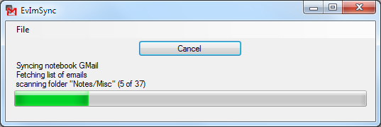

EvImSync
EvImSync is a small tool to synchronize Evernote notebooks with a Gmail account. Notes in Evernote are uploaded to your Gmail account as emails, and emails in Gmail are imported to Evernote notebooks as notes.

EvImSync requires .NET Framework 4. You can get this via Windows update or directly from here.
Details: how it works
EvImSync uses the Evernote script engine ENScript.exe
to import and export notes. These notes are parsed and then compared
to emails in your Gmail account using the IMAP protocol. This requires
that you have enabled IMAP in your Gmail settings:
You can sync one notebook with one folder in a Gmail account. EvImSync allows you to sync as many notebooks and Gmail folders as you like.
Limitations
Due to limitations both in the IMAP protocol, the Evernote scripting engine and the available documentation, the synchronization is not perfect. Some things simply can't be done by EvImSync.
- Notes in Evernote are not deleted: if you delete an email in Gmail, that deletion is not reflected in Evernote. ENScript doesn't have a command to delete a specific note. Instead, EvImSync uploads the note from Evernote again to Gmail. That means that if you want to delete a note, you must do that in Evernote, not in your Gmail account. Notes that are deleted in Evernote get moved to the folder "evernote trash" in your Gmail account from where you can remove them permanently if you like.
- Tag changes in Gmail are not reflected in Evernote: Again, ENScript doesn't have a command to do that. However, if you have a new email that's not already synced the Evernote you can use Gmail to add the tags you like. New emails are properly imported to Evernote with all the Gmail tags you have set. Synching tags in the other direction works ok: If you change tags in Evernote, those changes are properly reflected in your Gmail account.
- Source URLs are not synched: Source URLs from Evernote are not stored in Gmail, but of course left as is in the Evernote notes.
- Ink notes: Evernote Ink notes are not shown in Gmail. The format of those notes is not documented, so I can't convert them to images or something like that which would properly be shown in an email. Instead, such notes are converted to an email attachment. Synching those works, but as mentioned you won't be able to actually see them in Gmail.
Installation
EvImSync does not require installation. It can be run from any place. Just doubleclick on the file to run it.
By default, EvImSync stores its configuration in the %APPDATA%
folder. However if you want to use EvImSync on an USB-stick, rename
the exe file to EvImSyncPortable.exe: this will force
EvImSync to store its configuration in the same directory as it was
started from.
Configuration
EvImSync needs to know which Gmail folder it has to sync with which
of your notebooks in Evernote. To do that, you have to enter this
information in the configuration dialog. You can get to that dialog
via the File->Configuration menu.
Path to ENScript.exe: in case EvImSync can not determine that path automatically, you have to set it yourself. That tool should be in the folder where you've installed Evernote.Evernote Notebook: the name of the notebook you want to sync.Server: the domain name of the Gmail imap server. Usually that'simap.gmail.com.Username/Password: your Gmail username and password.Base Folder: the IMAP folder name where you want your notes to be put under. EvImSync requires that all notes be stored in a subfolder. I usually use Notes or the name of the Evernote notebook for that name.
After you've set that information, click on the Set Pair button to store the Gmail/Notebook pair. You can configure as many pairs as you like.
Synching
If you've set up at least one sync pair, just click on the Start Sync button to start the synchronization. Depending on how many notes/emails you have, this might take a while though.
Report problems
In case you encounter a bug or some other problem, please file an
issue in the issue tracker.
If EvImSync has problems with the encoding of emails, please save
the email as an eml and attach it to the issue. Otherwise
filing the issue is useless since I won't be able to reproduce the
problem and therefore won't be able to fix it.
Download
EvImSync is open source (GNU GPL v3). You can get the source code from the Google Code project page.
If you just want the compiled application, get it from the download page.